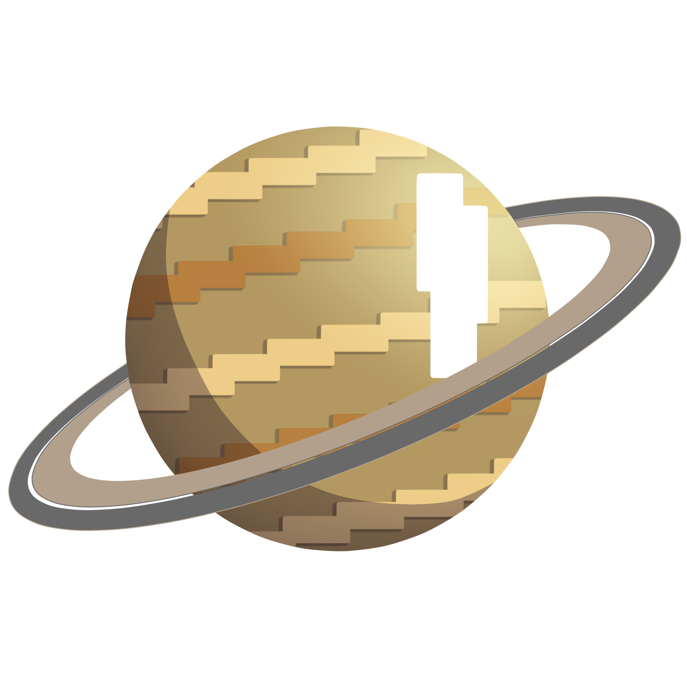
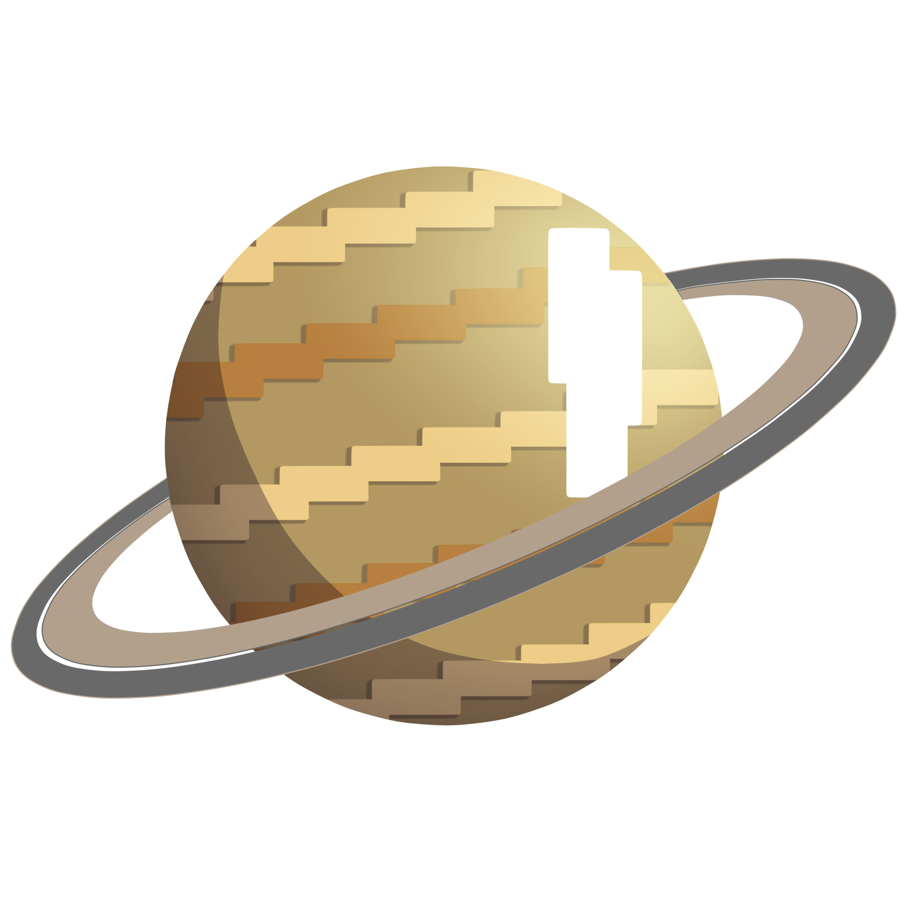

O Sistema Solar é formado por um conjunto de oito planetas com formas esféricas os quais
descrevem órbitas
elípticas, asteróides, satélites, meteoros e cometas que orbitam o Sol nossa principal
estrela. Esse sistema está localizado na Via Láctea, uma das galáxias que formam o Universo.
Todos os seres vivos dependem desse sistema principalmente do sol, como todos os corpos, os planetas e as
estrelas atraem outros corpos para junto de si. o Sol, ao seguir sua órbita no espaço, atrai planetas que giram
ao
seu redor, enquanto os planetas atraem os seus respectivos satélites.
Os astrônomos deduzem que nossa Via Láctea está no meio de um dos braços da faláxia, a 30 mil anos-luz do
núcleo, a
meio caminho entre a borda e o centro.
Na ordem a baixo nossos planetas são Mercúrio, Vênus, Terra, Marte, Júpiter, Saturno, Urano e Netuno.


 
